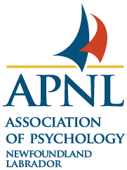

About the Project
The Wellness in Practice: NL Study is a SSHRC-funded research project that aims to explore training needs of registered psychologists in Newfoundland and Labrador.
The project involves major phases. In the first phase, we are conducting in-depth interviews with psychologists to better understand the gaps, needs, and challenges they face in their practice in NL. Click here to learn more or participate. In the second phase, we will develop and provide no-charge CE training events for NL psychologists. We will be tracking any changes in participants well-being, workplace burnout, and connectedness over the course of the study to determine the effectiveness of the trainings.
Wellness in Practice is supported in part by funding from the Social Sciences and Humanities Research Council of Canada. Additionally, we are grateful to have the support and partnership of:


Upcoming Sessions
Phase 1
Online one-on-one Interviews
We can work with you to schedule an interview time that fits around your schedule.
Phase 2
Continuing Education Events
We are currently confirming and scheduling continuing education events that will be free of charge for Association of Psychology: Newfoundland and Labrador members.
Descriptions of our sessions and speakers, and links to register will be found here!
Your Participant ID
Your unique participant ID is required each time you complete a survey for the study. If you have forgotten your ID, you can access it by using our secure ID generation app located here.
Project Documents
Hey... we all lose things. If you have misplaced or deleted any forms or documents, you can find them below. Click to view or download each one.
Study 1 (Online one-on-one Interviews)
Our Team
Dr. Veronica Hutchings is an Associate Professor and registered psychologist in Counselling and Psychological Services at Grenfell Campus, MUN. She is currently past chair of the section on Rural and Northern Psychology of the Canadian Psychology Association. Her current research interests include ethical psychological practice in rural, northern, and remote Canada. However, she is also interested in aging and clinical health psychology more broadly. Originally from Corner Brook, NL, as the principal investigator for this study she is responsible for the oversight of this project.
She is cross appointed to the Psychology Program at Grenfell Campus and the Discipline of Family Medicine within the Faculty of Medicine at Memorial University. She served as director of the Aging Research Centre of Newfoundland and Labrador from 2018-2021 and chair of the section on Rural and Northern Psychology for the Canadian Psychological Association from 2021-2026. She is an Associate Editor of the Journal of Rural Mental Health.
Dr. Conor Barker is an Associate Professor in Psychology and Education at Mount Saint Vincent University. He is a registered psychologist, teacher, and scholar whose SSHRC-funded research focuses on rural and northern psychology, psychologist competency, generalist practice, and creative approaches to psychological service delivery. His work also examines equity, diversity, inclusion, and accessibility in schools and psychology, with particular attention to inclusive education, knowledge translation, and practice in rural and underserved communities.
Dr. Barker brings a practice-informed lens to this project, drawing on his experience as a rural school psychologist, clinical practitioner, and researcher working across educational and community contexts.

Dr. Pritchard is a registered clinical psychologist and visiting professor at Memorial University's Grenfell Campus. He teaches courses related to child clinical psychology and research methods and statistics.
Additionally, he is the director of the SHORE lab, which primarily focuses on researching and better understanding suicide and health-related outcomes in rural settings.
Ms. Teagan Hemsley is a fifth-year student currently completing her Bachelor of Science (Honors) in Psychology at Grenfell Campus, Memorial University of Newfoundland. Her research interests include psychopathology, cognitive neuroscience, and social cognition.
She hopes to pursue graduate studies in clinical psychology and contribute to making mental healthcare more accessible in Newfoundland and Labrador.